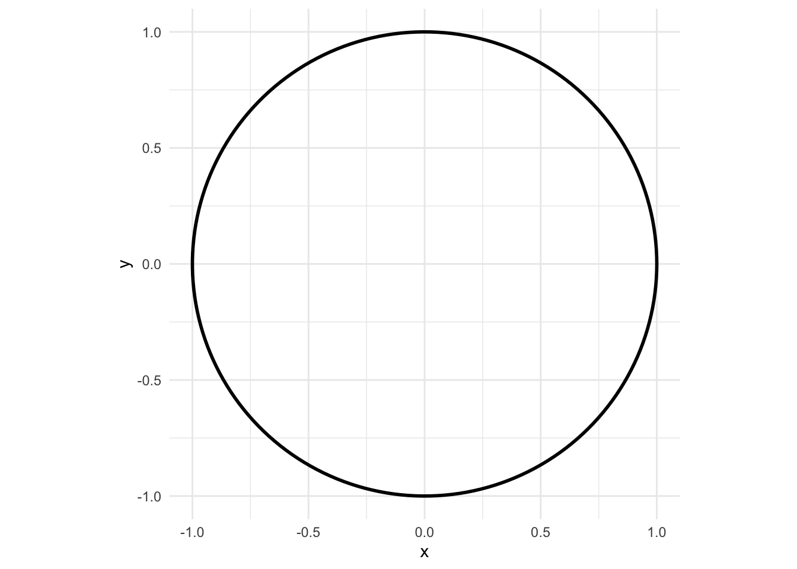
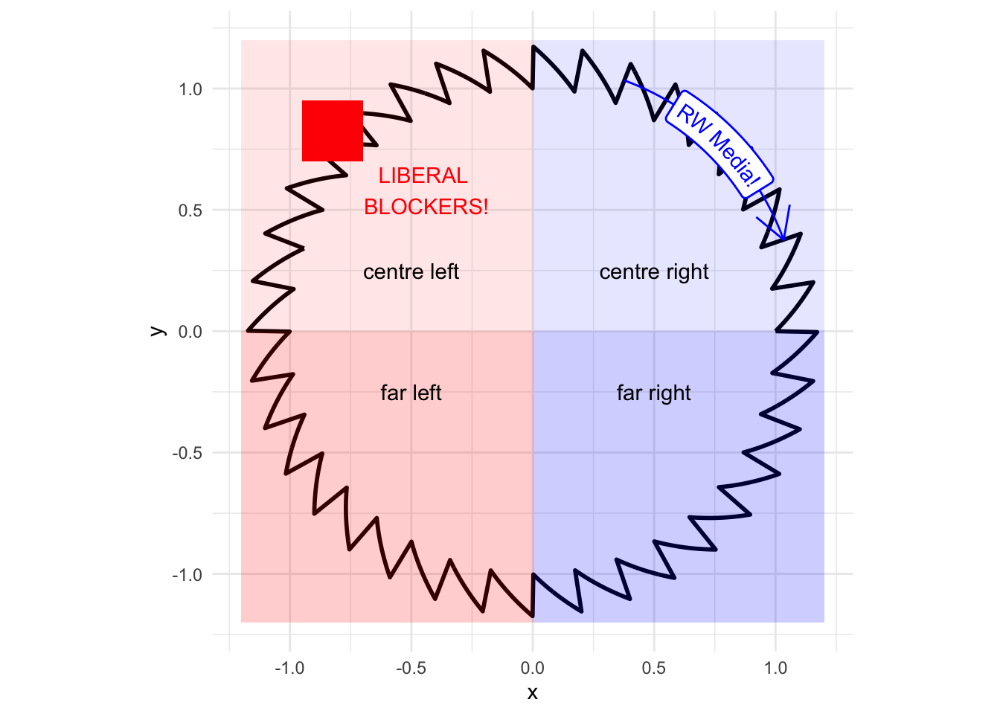

I got permanently banned from a politics forum for mentioning how circles work
politics
geometry
R
Author
Jon Minton
Published
January 21, 2024
A month or so back, I was skimming a far-left-wing online politics forum, where a visual metaphor was presented to illustrate why it’s important that nominally left-wing parties and institutions be genuinely left-wing, and not the insidious pretenders to the left disparagingly known as ‘liberals’. Verbally, the argument was something as follows:
Imagine public opinion on political issues is a continuum on a circle, with the true centre ground at the top of this circle, the moderate left its top left quadrant, the moderate right its top right quadrant, the far left on the bottom left quadrant, and the far right on the bottom right quadrant.
Now, unfortunately, the circle isn’t just any old circle, it’s got teeth. Going clockwise along the circle, these teeth jut up vertically, then fall back linearly, until the next tooth juts up. And the pattern repeats, all the way along the circle.
And even more unfortunately, over in the top right quadrant we have the first of a pair of villains: right wing agitators and the media. This group is like a motor, gripping the wheel and pulling it ever further to the right.
But this alone wouldn’t be too bad, but for the second villain in our story. Over in the top left quadrant, instead of a genuinely left-wing political force trying to pull the wheel back to the left, we have these f*cking liberals masquerading as agents of the left. Now, these liberals don’t work like a motor, pulling the wheel further to the left, just as the right wing forces pull the wheel further to the right. No, they work like a brake, actively stopping any substantial movement back to the left by pushing against the wheel’s teeth whenever it moves more than a degree or so leftward.
So, in this story, both the right and the liberal faux left are complicit in the horrible direction that modern society is taking. The liberals are at least as much to blame as the media, and so we hate them both.
But let’s first try to draw this visual metaphor, starting with just a unit circle:
Code
library(tidyverse)origin <-c(x=0, y =0)radius <-1angles <-seq(0, 2*pi, length.out =200)xpos <-cos(angles)ypos <-sin(angles)df <-tibble(angle = angles, x = xpos, y = ypos)df |>ggplot(aes(x=x, y = y)) +geom_path(linewidth =1) +coord_equal() +theme_minimal()

Now let’s think about how to draw the teeth:
Code
# For a sawtooth circle, the radius will be made of two components: # r_main, for the inner part of the circle, which does not change# r_saw, the amount the circle extends beyond r_main at different anglesgen_coords <-function(angles, r_main =1, r_saw_max =1, n_teeth =36) { gen_saw_protrusion <-function(r_saw_max, angles, n_teeth) { r_saw_max * angles %% (2*pi / n_teeth) } x <- (r_main +gen_saw_protrusion(r_saw_max, angles, n_teeth) ) *cos(angles) y <- (r_main +gen_saw_protrusion(r_saw_max, angles, n_teeth) ) *sin(angles)tibble(angle = angles, x = x, y = y)}angles <-seq(0, 2*pi, length.out =2000)sawcircle_coords <-gen_coords(angles)sawcircle_coords |>ggplot(aes(x=x, y = y)) +geom_path(linewidth =1) +coord_equal() +theme_minimal()
Now let’s label it:
Code
rw_angles <-seq(20* pi /180, 70* pi /180, length.out =100) rw_curve <-tibble(x =1.1*cos(rw_angles),y =1.1*sin(rw_angles))sawcircle_coords |>ggplot(aes(x=x, y = y)) +geom_path(linewidth =1) +coord_equal() +theme_minimal() +annotate('rect', xmin =-1.2, xmax=0, ymin=0, ymax=1.2, fill ='red', alpha =0.1) +annotate('rect', xmin=0, xmax =1.2, ymin=0, ymax=1.2, fill ='blue', alpha =0.1) +annotate('rect', xmin=0, xmax=1.2, ymin =-1.2, ymax =0, fill ='blue', alpha =0.2) +annotate('rect', xmin=-1.2, xmax=0, ymin=-1.2, ymax=0, fill ='red', alpha =0.2 ) +annotate('text', x =-0.5, y =0.25, label ="centre left") +annotate('text', x =0.5, y =0.25, label ='centre right') +annotate('text', x =0.5, y =-0.25, label ='far right') +annotate('text', x =-0.5, y =-0.25, label ='far left') +annotate('rect', xmin=-0.70, xmax=-0.95, ymin=0.70, ymax =0.95, fill ='red') +annotate('text', x =-0.45, y =0.58, colour ='red', label ='LIBERAL\n BLOCKERS!') + geomtextpath::geom_labelpath(aes(x = x, y = y), inherit.aes =FALSE, data = rw_curve, label ="RW Media!",color ="blue", arrow =arrow(ends ="first") )

Yes. That’s pretty much how the image looked.
Banning offence…
So, why did I get permanently banned from the forum that promoted this visual metaphor?
Well, I tend to take metaphors very seriously. So I asked something like the following:
Doesn’t this model suggest that some on the far right will become far left?
Which, if this political circle works like any other kind of circle, would seem to be the case…
Code
or_angles <-seq(240* pi /180, 300* pi /180, length.out =100) or_curve <-tibble(x =0.95*cos(or_angles),y =0.95*sin(or_angles))sawcircle_coords |>ggplot(aes(x=x, y = y)) +geom_path(linewidth =1) +coord_equal() +theme_minimal() +annotate('rect', xmin =-1.2, xmax=0, ymin=0, ymax=1.2, fill ='red', alpha =0.1) +annotate('rect', xmin=0, xmax =1.2, ymin=0, ymax=1.2, fill ='blue', alpha =0.1) +annotate('rect', xmin=0, xmax=1.2, ymin =-1.2, ymax =0, fill ='blue', alpha =0.2) +annotate('rect', xmin=-1.2, xmax=0, ymin=-1.2, ymax=0, fill ='red', alpha =0.2 ) +annotate('text', x =-0.5, y =0.25, label ="centre left") +annotate('text', x =0.5, y =0.25, label ='centre right') +annotate('text', x =0.5, y =-0.25, label ='far right') +annotate('text', x =-0.5, y =-0.25, label ='far left') +annotate('rect', xmin=-0.70, xmax=-0.95, ymin=0.70, ymax =0.95, fill ='red') +annotate('text', x =-0.45, y =0.58, colour ='red', label ='LIBERAL\n BLOCKERS!') + geomtextpath::geom_labelpath(aes(x = x, y = y), inherit.aes =FALSE, data = or_curve, label ="Radicalised!",color ="black", arrow =arrow(ends ="first") ) + geomtextpath::geom_labelpath(aes(x = x, y = y), inherit.aes =FALSE, data = rw_curve, label ="RW Media!",color ="blue", arrow =arrow(ends ="first") ) +geom_point(aes(x = x, y = y), inherit.aes=FALSE, data = or_curve[1,], colour ="darkred", shape =15, size =3) +geom_point(aes(x = x, y = y), inherit.aes=FALSE, data = or_curve[nrow(or_curve),], colour ="darkblue", shape =16, size =3)